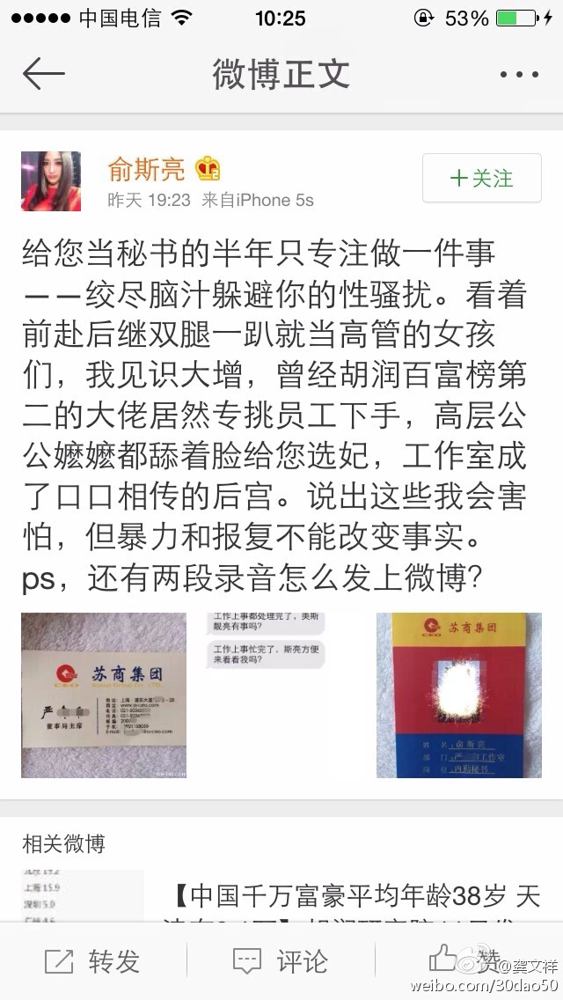
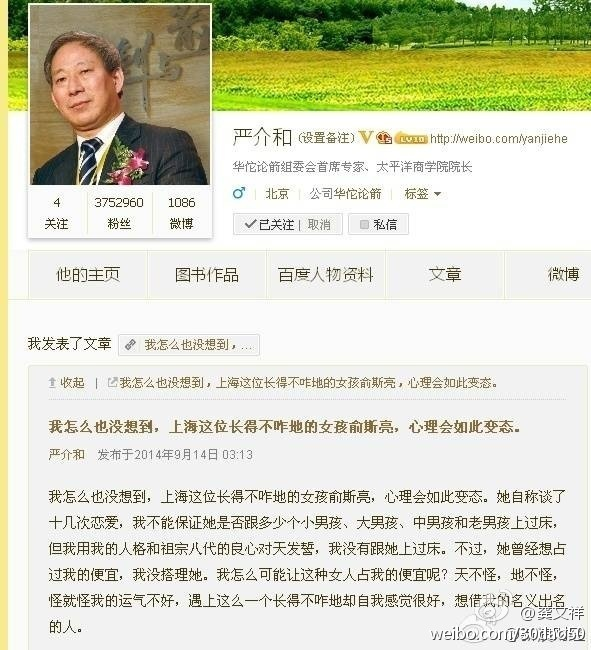

严的辩解很土鳖，那句“长得不怎么样”的描述会得罪非常多女性。莱温斯基就长得不怎么样，这个严把自己摆在太高的位置，网络最终是会把端着又不清白的家伙放倒的。@龚文祥:这个周末最大的八卦是福布斯中国排名第二富豪严介和的秘书指责性骚扰，严总否认上过床。大家根据这2条微博常识性判断事情真相？我的判断是严肯定言语性骚扰了，但没有上床。（富豪老板潜规则企业身边女员工几乎是中国所有知名大企业的潜规则）。你的常识性结论是？ 
严的粗鄙是有多少钱都盖不住的。//@黄佟佟:一你没和人上过床，不证明你没骚扰过人家姑娘呀．智商令人捉急，二一个四五十岁大男人，一上来就黑人家女孩谈多少恋爱，人品ＬＯＷ爆，直男癌---:抱歉，此微博已被作者删除。查看帮助： 网页链接
能够学习的点很多。@秋叶:全程剧透——秋叶的在线课程是如何盈利的（上）：本文近2万字，是秋叶对目前国内关于在线教育市场的深入思考。我相信你读完本文，不管你对在线教育感不感兴趣，至少你对如何在线学习，会有全新的认识。全程剧透——秋叶的在线课程是如何盈利的（上）
就是想知道，微信还能火多久？@罗天娟:有小时候的朋友来，特别起个早床，开车去到她们喜欢住的老城区，请人家喝早茶。边喝茶，边聊天，感觉她们都时刻惦记微信，好像生怕错过了八卦，错过微信存在感。我刚刚上微博时，也有这毛病，现在看到别人这样子，深深的觉得，人们内心的惶惶和渴望，渴望被关注，渴求人呼应，渴望人知道，时代病态。
//@hcc在thu:现在已经有用户感觉到疲惫了吧，不过火还是能火几年的。朋友圈信息爆炸太严重，原创度越来越低。技术层面，朋友圈打开常出现卡顿现象，不能忍。另外，公众账号文的文章的打开率低也是个问题。之前发展太快，但喧嚣和泡沫之后才是忠实用户的沉淀，回归常态。。@罗天娟:有小时候的朋友来，特别起个早床，开车去到她们喜欢住的老城区，请人家喝早茶。边喝茶，边聊天，感觉她们都时刻惦记微信，好像生怕错过了八卦，错过微信存在感。我刚刚上微博时，也有这毛病，现在看到别人这样子，深深的觉得，人们内心的惶惶和渴望，渴望被关注，渴求人呼应，渴望人知道，时代病态。